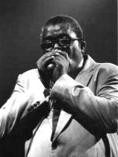
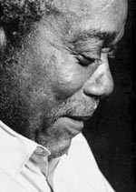

Подобно птице Фениксу Sam Myers - звезда сессионных записей Чикаго 40- 60, возродился на широкой сцене в 1986 в составе ансамбля техасского гитариста Anson Funderburgh.
Sam Myers родился 19 февраля 1936 году в штате Миссисипи. Молодому слепому парню пришлось выбрать музыкальный инструмент, на котором не нужно видеть, что играешь - губную гармошку. В 1949 году Сэм переезжает жить в Чикаго, где оттачивает свое исполнительское мастерство под влиянием Little Walter и James Cotton. Поднаторев в исполнении блюза, Сэм присоединяется к King Mose & the Royal Rockers, именно при поддержке этого ансамбля он и записывает свою первую сорокапятку для лейбла Ace.
В шестидесятых выступает и записывается со звездой Чикаго первой величины - Elmore James. В его стиле в это время улавливается влияние известных мастеров Чикаго от Sonny Boy до James Cotton. Не смотря на отсутствие оригинальности, но благодаря мастерству, стабильности и надежности остается на плаву в море жесткой конкуренции харперов блюзового центра. Интересно, что у Elmore James'a Sam работал также барабанщиком.

В конце семидесятых - начале восмидесятых выступает вместе с ансамблем the Mississippi Delta Blues Band.
В середине 80-х он присоединяется к ансамблю молодого слингера техасского блюза - Anson Funderburgh & The Rockets. Благодаря опыту, виртуозности, богатому блюзовому прошлому Sam'a и молодому напору Funderburgh'а их содружество приносит плоды - они частые и желанные гости на блюзовых фестивалях, много записываются.
Стиль, в котором играют Anson Funderburgh & The Rockets featuring Sam Myers представляет собой техасский свинг. Мощный, глубокий, сильный голос, густой звук гармоники Meyers'a, украшенные превосходной гитарой Funderburgh'а при поддержке великолепной ритм секции сделали стиль этого ансамбля мгновенно узнаваемыми. Кстати фронтмены и группа в целом неоднократно номинировались на высшую награду в блюзе - W. C. Handy awards.
Константин Колесниченко [aka Wheel]
bluesharp.inkharkov.com